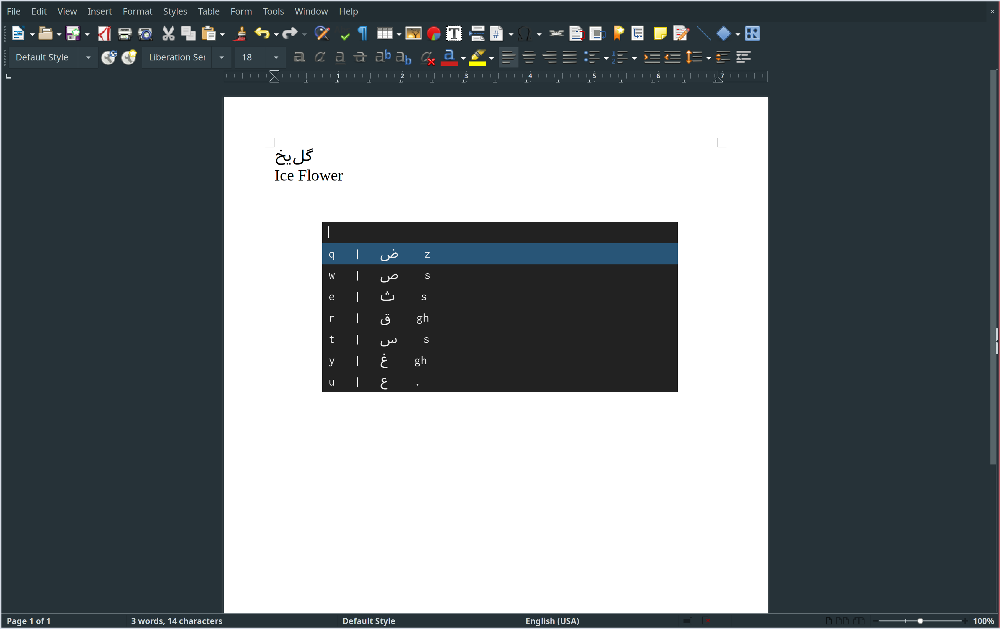

Portfolio
Table of Contents
1 Indoor Automated Garden
In 2018 after completing the Recurse center I moved to the Bronx to help a friend keep her childhood apartment in her name. I have always wanted to have a garden but I needed to reside in the city for my transgender services at Mount Sinai. So I brainstormed ways to create the garden of my dreams inside a northern exposure apartment in the middle of a food desert and green desert.
My garden started humbly with some led grow lights and two little ghost pepper plants. I took the last shelf off my book shelf and hung the lights.

Soon I added in an Arduino controlled relay (in the box) to turn the lights on and off at set times each day. The program controlling it was simply doing a delay() for 12 hours. Not the most robust system, and it reset the program timer anytime the power reset, which was frequent with storms and sloppy cord management :)
A bell pepper coming in! By this point I added in a rtcds1307 real time clock to keep a battery powered time store that wouldn't reset in the case of power failures as the simple Arduino program I wrote would.

Here is the janky c code I settled on :)
// Date and time functions using a DS1307 RTC connected via I2C and Wire lib #include <Wire.h> #include "RTClib.h" RTC_DS1307 rtc; // constants won't change. Used here to set a pin number: const int relay = 2; // start light off int ledState = HIGH; // t1 on int h1 = 7; // t2 off int h2 = 22; void setup () { while (!Serial); // for Leonardo/Micro/Zero Serial.begin(9600); delay(3000); if (! rtc.begin()) { Serial.println("Couldn't find RTC"); while (1); } // following line sets the RTC to the date & time this sketch was compiled // uncomment to set new date time // rtc.adjust(DateTime(F(__DATE__), F(__TIME__))); digitalWrite(relay, LOW); pinMode(relay, OUTPUT); } void loop () { DateTime now = rtc.now(); Serial.println(now.hour()); Serial.println(now.minute()); Serial.println(ledState ? "HIGH" : "LOW"); if (now.hour() >= h1 && ledState == HIGH && now.hour() < h2) { // if the LED is off turn it on Serial.println("Switching light on"); ledState = LOW; } else if ((now.hour() >= h2 || now.hour() < h1) && ledState == LOW) { Serial.println("Switching light off"); ledState = HIGH; } // set the LED with the ledState of the variable: digitalWrite(relay, ledState); delay(3000); }
Next I added in gravity fed drip irrigation, using an old paint bucket and a step drill bit I fit a hose connector to the bucket. This proved to be leaky and was eventually replaced with a proper gasket and valve. Water is fed into the bucket, then goes down main line then enters the drip line and leaves the emitters at 0.5 Gal / hour.

Pictured are my two black mulberry cuttings which sent out roots, and the blue drip emitters

Here is my white mulberry grown from seeds taken on my street, white mulberries are grown natively throughout the middle east but are new here!
2 Linux RICE (Github)
I run Arch Linux with a completely customized user-space that has tight integration and command keystroke parity between Emacs, terminal, and various Unix utilities. Pictured below is my i3 WM setup

2.1 Overview
These are some interesting scripts I've written to make my desktop tick, and sometimes fly:
- Internationalization - this script queries the installed keyboards and sets a toggle-able keyboard with the default en keyboard, and this script allows the user to search by phonetic sound to see which Farsi letters represent that sound, and the keyboard mappings which type that character (useful when you only have an English keyboard as I do). This makes typing Farsi on an English keyboard introspect-able and efficient.

- Simple Display Manger I wrote in bash, which is used here to choose the window manager on login. The second part of this process is done here, where we take the name of window manager and get its startup command from
/usr/share/xsessions/$session.desktop - Set Background - this script is run as a cron job to change the wallpaper every hour to a random wallpaper. If invoked manually you can pass the -s flag to keep the wallpaper the same. Additionally you can pass a wallpaper name to choose specifically which wallpaper is desired.
- Pzasswords & GPG Keys - this script backs up encrypted passwords and GPG keys and this script clones them to a new/broken machine
- Kill Port utility - to kill whatever process is running on a specific port. Very useful when node bugs out
- Git alias - this utility allows me to use git commands in my home folder as it is version controlled as a bare git repository. This means all my dotfiles are always version controlled without any fancy scripts or tools, just git
- Startup applications: this runs when Xorg starts up and checks to see which DE/WM is being used and starts the appropriate applications
3 Open Source Coding Projects
Open source is incredibly important to me, and I make every piece of software I write open source and freely licensed. Below are three of my favorite projects I've written over the last few years.
3.1 Search Within Video (Github Website)
Search Within Video allows you to upload a video or provide a Youtube URL that is downloaded and analyzed using OpenCV to see which frames are statistically most unique based off of mean squared error comparisons to the previous frame. These unique frames are then uploaded to an open source image classifier, and the results are returned to the user in the form of a searchable video. The user can search for an object such as "dog" and the video will load the timestamp of any dog occurrence.
This project has a micro-service architecture and runs the video parser and image classifier on a python back-end and the web page off a node server.
3.2 Ray Tracer (Github)
Pictured below is the sample output from my ray tracer. It can render shapes at different depths, with variable lighting and backgrounds. Shadows don't work properly but there should be support soon.
3.3 Steganographic Encoder (Github)
This project somewhat sloppily hides messages and decodes them from pictures using least significant bit manipulation.
4 Emacs Build (Github)
Emacs is the ideal extensible editor for all types of plain text, including code and latex. My custom build includes support for many useful tools including vim emulation, email, auto-completion, compilation, and many tweaks that make windowing inside of Emacs work like it does in my window manager of choice i3. My custom build features 8 language configurations and 14 general purpose modules that configure everything from git support to editing

4.1 Measuring startup time
Startup performance of my custom build is monitored very closely. Here I implement a module timer to track performance / load time of each custom module.
;; debug startup performance / load time using (measure-time(load "custom-module.el")) (defmacro measure-time (&rest body) "Measure the time it takes to evaluate BODY." `(let ((time (current-time))) ,@body (message "%.06f" (float-time (time-since time)))))
4.2 Email
I setup Emacs as an email client using https://github.com/cemkeylan/mu-wizard/ to set up mu4e! I am still amazed this works.
4.3 Emacs as window manager
Emacs is very nearly an entire OS in it's own right. I use it as my window manager while programming for a distraction free environment tightly configured with multi-language integration. Here we load the Emacs x window manager (EXWM) config:
;; emacs as window manager (setq session (getenv "SESSION")) (if (equal session "emacs") (progn (message "managing windows") (load "custom-exwm-config.el") ) )